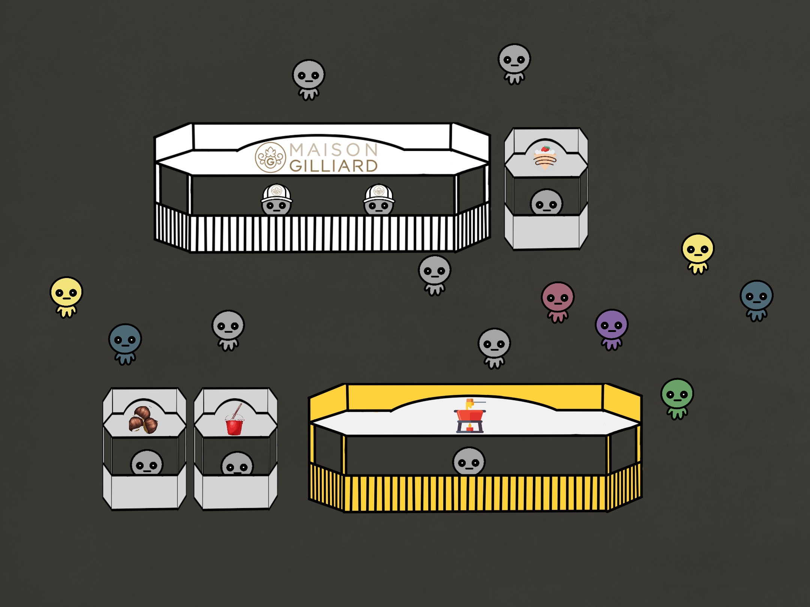
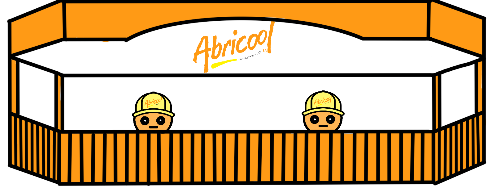
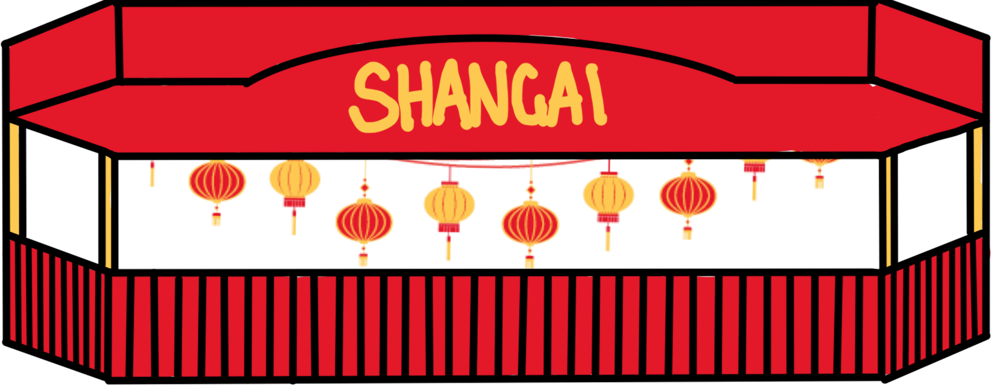
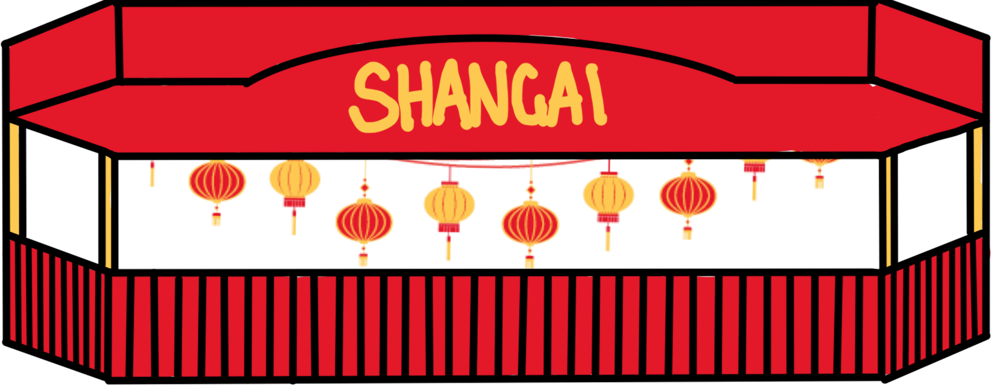
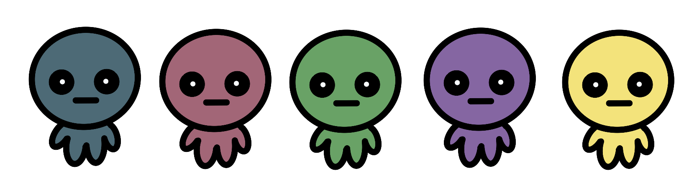

Mockup
Écran de jeu
Cet écran représente le conteneur du jeu. Il sera le même tout au long de la partie avec les différentes informations de jeu tel que le taux d'alcoolémie, le timer et la mission en cours. Il y a également un espace prévu pour les conversations qui est initialement vide. Lorsque le joueur s'approche d'un stand ou d'un personnage, un texte ou une indication s'y affichera.
Tutoriel
Lors sa première partie, le joueur commencera par une salle de tutoriel. Il aura comme mission d'acheter un billet, de passer au bancomat puis de passer l'entrée de la foire.
Salles de la foire
Les salles auront toutes la même structure. Pour se déplacer de salle en salle, le joueur aura la possibilité de passer en haut, en bas, à gauche ou à droite de l'écran. Voici deux exemples de salles ci-dessous.
A la fermeture de la foire, le personnage arrive à l'after ci-dessous.

A la fin d'une journée, le personnage arrive au lunabus ci-dessous.

Stands
Voici les différents stands qui seront présents sur la Foire.
Abricool
Espace Gourmand

Maison Gilliard
Grand-Père Cornut

Le Nouvelliste
Rhône FM

Swisscom

Pot de chambre

Stand de boissons
Stands de nourriture
 

Personnages
En plus du personnage principal, il y a 2 types de personnages. Les personnages de foule et les personnages travaillant dans les différents stands.
Personnage principal
Personnages de foule
Personnages de stands


Écrans de fin de jeu
Voici les écrans de défaite et de victoire